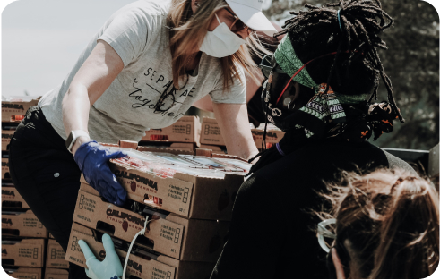
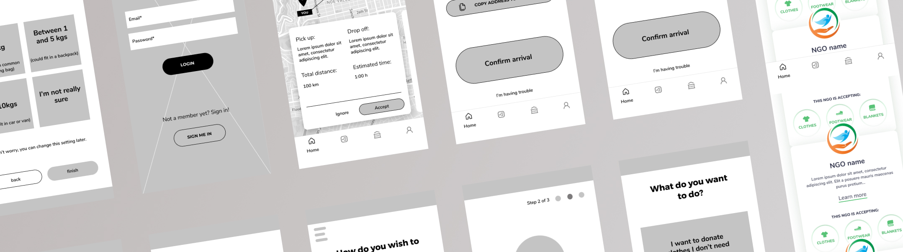
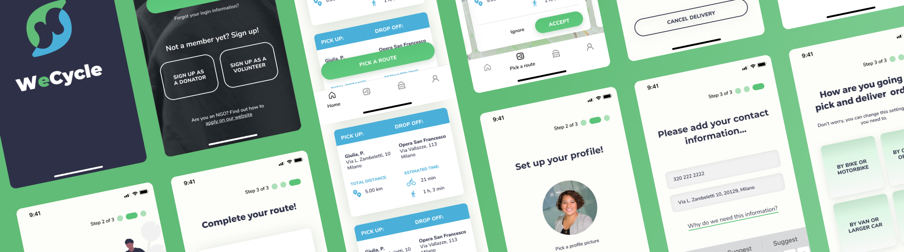

WeCycle
Aim was to develop a service experience, usable through a website and an app. The app would connect professionals (willing to provide their skills and their time on a voluntary basis), with associations, non- profit organisations and small businesses that need the service.
User Interview
7Volunteers
3NGO
- People build frienships while volunteering.
- Participants volunteer to feel part of something and they like to make the difference..
- NGOS have difficulty to receive specific clothes for their needs.
- NGOS can deliver goods more speedily and efficiently as compared to indifferent bureaucracy at ground level.
Approach
Understand
- Trend Analisys
- SWOT Analisys
- Competitor Analisys
Observe
- User Interview
- User Testing
- Personas
Define
- Customer Journey
- Target Definition
- Business Model Canvas
Deliver
- Idea Generation
- Conclusion
Customer Journey
Francesca’s
Journey
Francesca is an Italian student from Milan, she is 23 years. She often thinks to the future and she is worried about her uncertain career path and the sustainability problems that earth will have to face.
Result
The analysis results into understanding a lack of communication between Donator, Volunteer and NGOs.
Value Proposition
Improve used clothes life cycle through doorstep pick-up, thanks to a community based on local NGOs, donators and volunteer riders.
Wireframe
UI
